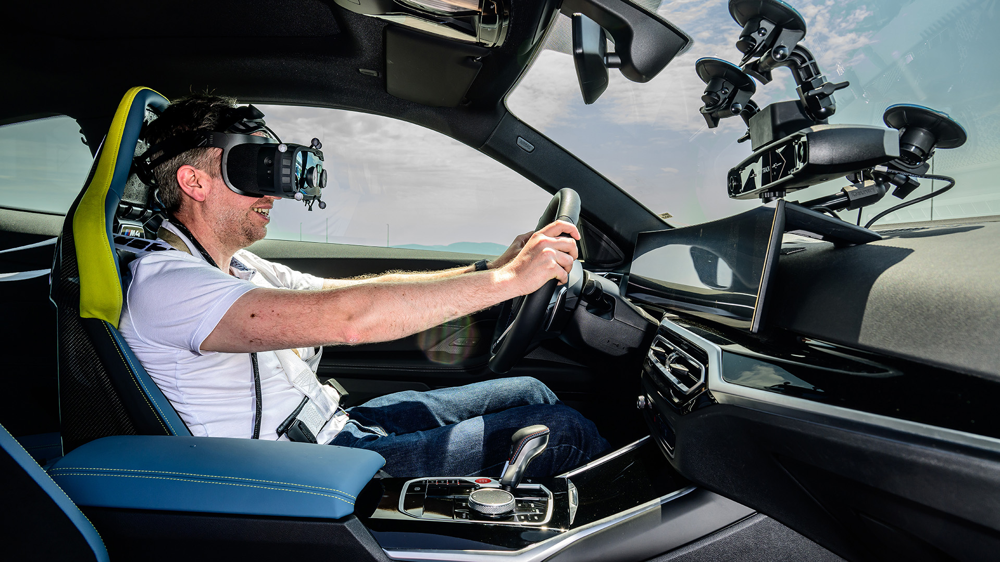
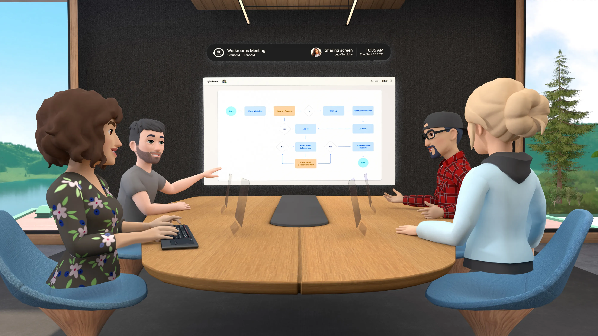
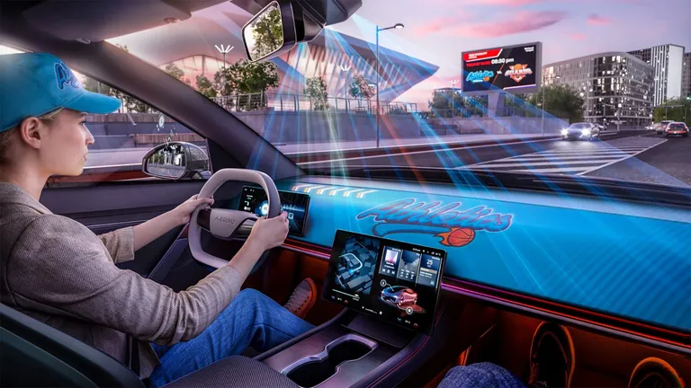

Fuel iX Fortify
[Telus Digital] Conducted UX research, market analysis, and competitive benchmarking to recommend marketing strategy and enhance the usability of a B2B enterprise AI security tool (automated red-teaming).

Product | UX Researcher
Virginia Tech
About Me
I am a Ph.D. student at Virginia Tech; co-advised by Dr. Rafael N. C. Patrick & Dr. Taylan Topcu. I specialize in the intersection of Human Factors, Human-Computer Interaction (HCI), and Systems Engineering.
I am interested in making systems more efficient, intuitive, accessible, and enjoyable to use for all users.

[Telus Digital] Conducted UX research, market analysis, and competitive benchmarking to recommend marketing strategy and enhance the usability of a B2B enterprise AI security tool (automated red-teaming).

[TELUS Digital] Evaluated the impact of Fuel iX Copilot (Agentic AI) on workplace productivity and conducted UX research to define key Jobs-to-be-Done (JTBD).

[RainFly] Led a six-month NSF‑funded formative UX research program — five monthly evaluation cycles with practicing OSINT analysts — that iteratively refined an open-source intelligence platform toward deployment readiness.

[TLOS] Led a mixed-methods stakeholder analysis (N=232 survey, focus groups, SME interviews) identifying the socio-technical barriers to eXtended Reality (XR) adoption at an R1 university, and delivered a stakeholder needs framework and external development guide.
[TLOS] Directed the end-to-end development of a VR fire safety training module with an external vendor, ran iterative usability cycles, and tested its impact on learner performance and self-efficacy against traditional training.

[Northrop Grumman Corporation] Assessed the usability and operational readiness of a 3D Map Visualization VFR Training Tool for remote Air Traffic Control/Management (ATC/M) training through remote testing with certified professional controllers. Published in IISE Transactions on Occupational Ergonomics and Human Factors.
Lab & Class Projects:

[University of Nottingham] Investigated the effect of eXtended Reality (XR) non-driving related tasks (NDRT) on driver situational awareness.

Evaluated the usability of multiple VR team productivity platforms and investigated its integration potential.
Designed a parental control mobile app that restricts children's access to social media platforms.

Designed a Lv.3 AV center information display system that allows users to customize their driving experience.
In progress